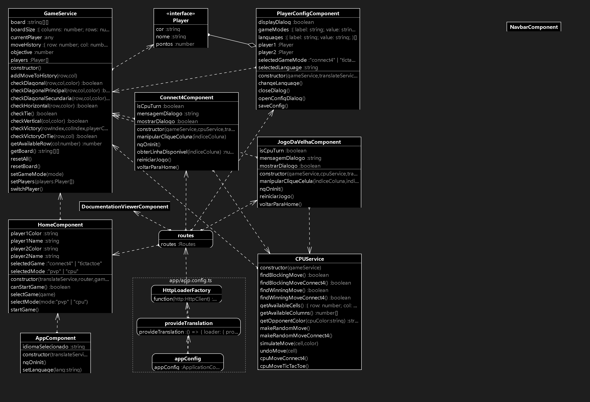

- Properties

GameService
Atributos:
- board: Armazena o estado atual do tabuleiro como uma matriz de strings.
- boardSize: Contém o número de colunas e linhas do tabuleiro.
- currentPlayer: Indica o jogador atual.
- moveHistory: Histórico dos movimentos realizados durante o jogo.
- objective: Número de peças necessárias para vitória.
- players: Lista de jogadores, instanciados através da interface
Player.
Métodos:
- addMoveToHistory(row, col): Adiciona uma jogada ao histórico.
- checkDiagonal(): Verifica se há uma sequência diagonal de peças iguais.
- checkHorizontal(), checkVertical(): Verifica se há uma sequência
horizontal ou
vertical.
- checkVictory(): Determina se houve uma vitória após um movimento.
- getBoard(), resetBoard(): Retorna o tabuleiro atual ou o reseta.
- switchPlayer(): Alterna entre os jogadores.
Connect4Component
Atributos:
- isCpuTurn: Indica se é a vez da CPU jogar.
- mensagemDialogo: Mensagem exibida em um diálogo modal.
Métodos:
- manipularCliqueColuna(indiceColuna): Controla o clique em uma coluna,
inserindo
uma peça.
- reiniciarJogo(), voltarParaHome(): Reinicia o jogo ou retorna para a tela
inicial.
Relacionamento: Utiliza o
GameService para acessar as funcionalidades de
jogo e o
serviço de tradução.
PlayerConfigComponent
Atributos:
- displayDialog: Define se a janela de configuração de jogador está visível.
- gameModes: Lista de modos de jogo disponíveis.
- player1, player2: Referências aos jogadores configurados.
Métodos:
- openConfigDialog(), closeDialog(): Abre ou fecha o diálogo de
configuração.
- saveConfig(): Salva as configurações do jogador.
Relacionamento: Usa o
GameService para configurar os jogadores.
JogoDaVelhaComponent
Atributos:
- isCpuTurn: Indica se é a vez da CPU no jogo da velha.
- mensagemDialogo: Mensagem para diálogos de interação com o usuário.
Métodos:
- manipularCliqueCelula(indiceCelula): Controla os cliques em uma célula do
tabuleiro do jogo da velha.
- reiniciarJogo(), voltarParaHome(): Reinicia o jogo ou volta para a página
principal.
Relacionamento: Utiliza o
GameService e o
CPUService para lógica de
jogo e
movimentos automáticos da CPU.
CPUService
Atributos:
- Nenhum atributo específico.
Métodos:
- findBlockingMove(): Busca movimentos que podem bloquear a vitória do
jogador
adversário.
- findWinningMove(): Busca movimentos vencedores para a CPU.
- makeRandomMove(): Realiza um movimento aleatório quando não há uma jogada
óbvia.
Relacionamento: Está relacionado a componentes de jogos como
Connect4Component e
JogoDaVelhaComponent para executar ações controladas pela CPU.
HomeComponent
Atributos:
- player1Name, player2Name: Armazena os nomes dos jogadores no jogo da velha
ou
Conecta 4.
- selectedMode: Define o modo de jogo selecionado, entre "conecta4" ou "tic
tac
toe".
Métodos:
- selectGame(mode): Seleciona o modo de jogo desejado.
- startGame(): Inicia o jogo baseado na seleção de modo.
Relacionamento: Interage com
PlayerConfigComponent para configurar os
jogadores e
iniciar o jogo.
NavbarComponent
Componente simples que representa a barra de navegação, sem atributos ou métodos
específicos detalhados no diagrama.
AppComponent
Atributos:
- idiomaSelecionado: Indica o idioma atual selecionado pelo usuário.
Métodos:
- setLanguage(lang): Define o idioma para a aplicação.
Relacionamento: Trabalha com o serviço de tradução para garantir que os textos da
aplicação sejam exibidos no idioma correto.
HttpLoaderFactory
Responsável por fornecer as configurações para carregamento de arquivos HTTP, usado
principalmente no serviço de tradução.
TranslateService
Atributos:
- currentLang: Armazena o idioma atual da aplicação.
Métodos:
- getTranslation(lang): Recupera a tradução para o idioma especificado.
- use(lang): Define o idioma usado na aplicação.
Relacionamento: Utilizado por componentes como
AppComponent e
NavbarComponent para gerenciar a exibição de conteúdos traduzidos.
GameInterface
Define a interface que o GameService deve implementar para garantir a
estrutura do
jogo. Relacionado diretamente com os serviços de lógica de jogo.
Player
Representa os jogadores dentro da aplicação. Pode ser humano ou CPU.
BoardComponent
Responsável por renderizar o estado atual do tabuleiro. Faz uso dos dados fornecidos
pelo
GameService para apresentar o jogo visualmente.